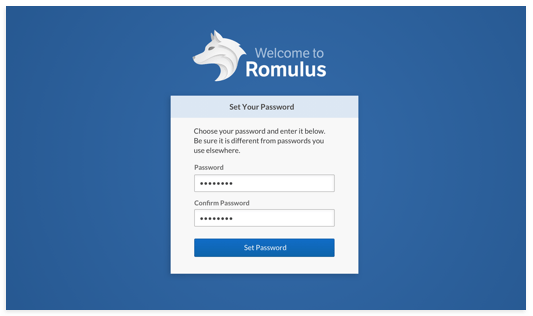
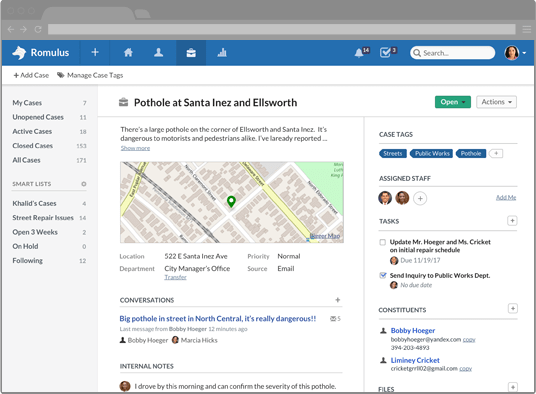

Romulus
My role: UX research & design, visual design
{kind=link}
Background
I was hired by Seneca Systems to lead design for Romulus, its web-based CRM for local governments. Romulus is used in local governments to track requests from citizens, monitor office performance, and help to optimize workflow.
An initial version of Romulus, essentially an MVP, already was in use by paying clients when I was hired. We decided to create a new, 2.0-type version of Romulus which would add important features while making it easier to use.
{kind=link}
Personas, Scenarios, and Spec
Using information gathered from actual and potential users, I created personas and drafted various scenarios to assist the design process.
Because we were creating a major redesign — essentially a new product — I was asked to create and present a written spec to ensure that we were all on the same page with regard to the product's features and to serve as a reference for the design process.
{kind=link}
Competitive Analysis, Wireframes and Task Flows
I produced a large number of wireframes and task flows in consultation with our CTO to describe of all facets of the application. During this process, I also interviewed our customers and solicited feedback on in-process design mockups.
I worked closely with our CTO who implemented the design as he was developing the app. Although the CTO developed the majority of the app, I contributed revisions, HTML/CSS refinements, and bug fixes to the codebase.
{kind=link}
{kind=link}
Launch & Reception
The new product was well received by users, investors, and prospective customers. Our sales team closed a number of new customers, and VCs such as Initialized Capital and Cowboy Ventures joined as investors following our CEO's presentation at Y Combinator's Demo Day.

Iteration and Additional Work
{kind=link}
Feedback & Refinement
I continued to interview users after the Romulus redesign launched, and also conducted a number of user tests. When we expanded the functionality of our e-mail messaging feature, a project that involved a redesign of a significant part of the application, I used the opportunity to resolve a number of design defects that had been uncovered during user testing.
{kind=link}
An Evolving Design System
Romulus’s features and scope were growing and so was our team. As we brought on additional engineers to work on the product, it became clear that we needed to establish a design system to ensure consistency in the app and to provide reference materials for our developers. I created a graphic library of standardized interface elements using Sketch.
Design Refresh
{kind=link}

The experimental visual design mockups shown here were produced in 2017 in an attempt to simplify and lighten the design and to be more economical with the use of color. I also sought a more thoughtful way to present the case list, previously designed as a traditional data grid with clickable headers.